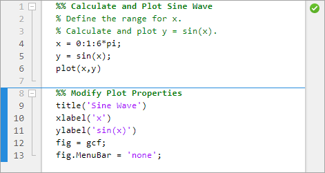
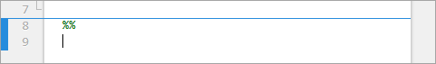
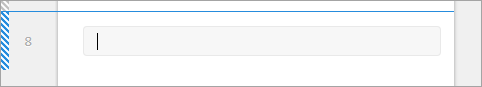
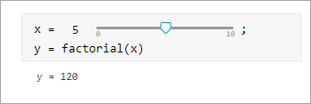
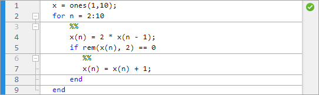
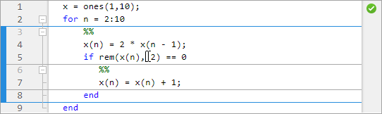
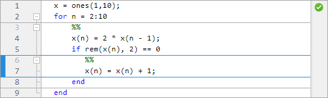

Create and Run Sections in Code
MATLAB® code files often contain many commands and lines of text. You typically focus your efforts on a single part of your code at a time, working with the code and related text in pieces. For easier document management and navigation, divide your file into sections. Then, you can run the code in an individual section and navigate between sections, as needed.

Divide Your File into Sections
To create a section, go to the Editor or Live
Editor tab and in the Section section, click the
Section Break button. You also can enter two percent
signs (%%) at the start of the line where you want to begin the
new section. The new section is highlighted with a blue border, indicating that it
is selected. If there is only one section in your code file, the section is not
highlighted, as it is always selected.
In the Editor, a section begins with two percent signs (%%).
The text on the same line as %% is called the section
title. Including section titles is optional, however, it improves the
readability of the file and appears as a heading if you publish your code.

In the Live Editor, a section can consist of code, text, and output. When you create a section or modify an existing section, the bar on the left side of the section is displayed with vertical striping. The striping indicates that the section is stale. A stale section is a section that has not yet been run, or that has been modified since it was last run.

Delete Sections
To delete a section break in the Editor, delete the two percent signs
(%%) at the beginning of the section. To delete a section
break in the Live Editor, place your cursor at the beginning of the line
directly after the section break and press Backspace.
Alternatively, you can place your cursor at the end of the line directly before
the section break and press the Delete key.
Note
You cannot remove sections breaks added by MATLAB. For more information about when MATLAB might add a section break, see Behavior of Sections in Functions and Behavior of Sections in Loops and Conditional Statements.
Minimize Section Margin
To maximize the space available for editing code in the Editor, you can hide the Run Section, Run to Here, and Code Folding margins. This minimizes the gray area to the left of your code. To hide one or more of the margins, right-click the gray area to the left of your code and clear the Show Run Section Margin, Show Run to Here Margin, and/or Show Code Folding Margin options.
Run Sections
You can run your code file by either running each section individually or by running all of the code in the file at once. To run a section individually, it must contain all the values it requires, or the values must exist in the MATLAB workspace. When running individual sections, MATLAB does not save your file and the file does not have to be on your search path.
This table describes different ways to run your code.
| Operation | Instructions |
|---|---|
| Run all the code in the file. | On the Editor or Live Editor tab, in the Run section, click Run. |
| Run the code in the selected section. | On the Editor or Live Editor tab, in the Section section, click Run Section. In the Live Editor, you also can click the blue bar to the left of the section. |
| Run the code in the selected section, and then move to the next section. | On the Editor or Live Editor tab, in the Section section, select Run and Advance. |
| Run the code in the selected section, and then run all the code after the selected section. | On the Editor or Live Editor tab, in the Section section, select Run to End. |
| Run to a specific line of code and pause. | Click the In the
Editor, the For more information, see Debug MATLAB Code Files. |
Increment Values in Sections
Since R2023a
In the Editor, you can increment, decrement, multiply, or divide numeric values within a section, rerunning that section after every change. This workflow can help you fine-tune and experiment with your code.
To adjust a numeric value, select the value or place your cursor next to the value. Next, right-click and select Increment Value and Run Section. In the dialog box that appears, specify a step value for addition and subtraction or a scale value for multiplication and division. Then, click one of the operator buttons to add to, subtract from, multiply, or divide the selected value in your section. MATLAB runs the section after every click.

In the Live Editor, you can use controls to increment and decrement a numeric value within a section. For example, this code calculates the factorial of the variable x.
x = 5; y = factorial(x)
y = 120
5
with a slider. By default, MATLAB reruns the current section when the value of the slider
changes.
For more information, see Add Interactive Controls to a Live Script.
Navigate Between Sections
You can navigate between sections in a file without running the code within those sections. This navigation facilitates jumping quickly from section to section within a file. You might navigate this way, for example, to find specific code in a large file.
| Operation | Instructions |
|---|---|
| Move to specific section. | On the Editor or Live
Editor tab, in the Navigate
section, click
Go To
|
| Move to previous section. | On the Editor or Live
Editor tab, in the Navigate
section, click
Go To
|
| Move to next section | On the Editor or Live
Editor tab, in the Navigate
section, click
Go To
|
Behavior of Sections in Functions
In the Editor, if you add a section break within a function, MATLAB inserts section breaks at the function declaration and at the function
end statement. If you do not end the function with an end
statement, MATLAB behaves as if the end of the function occurs immediately before the
start of the next function.
Behavior of Sections in Loops and Conditional Statements
In the Editor, if you add a section break within a loop or conditional statement
(such as an if statement or for loop),
MATLAB adds section breaks at the lines containing the start and end of the
statement (if those lines do not already contain a section break). The sections
within the loop or conditional statement are independent from the sections in the
remaining code and become nested inside the sections in the remaining code. Sections
inside nested loop or conditional statements also become nested.
For example, this code preallocates a 10-element vector, and then calculates nine values. If a calculated value is even, MATLAB adds one to it.
x = ones(1,10);
for n = 2:10
x(n) = 2 * x(n - 1);
if rem(x(n), 2) == 0
x(n) = x(n) + 1;
end
endIf you add a section break at line 3, inside the for loop,
MATLAB adds a section break at line 9, the end statement for the
for loop. If you add a section break at line 6, inside the
if statement, MATLAB adds a section break at line 8, the end statement for the
if statement, leading to three levels of nested
sections.
At the outermost level of nesting, one section spans the entire file.

At the second level of nesting, a section exists within the
forloop.
At the third level of nesting, one section exists within the
ifstatement.